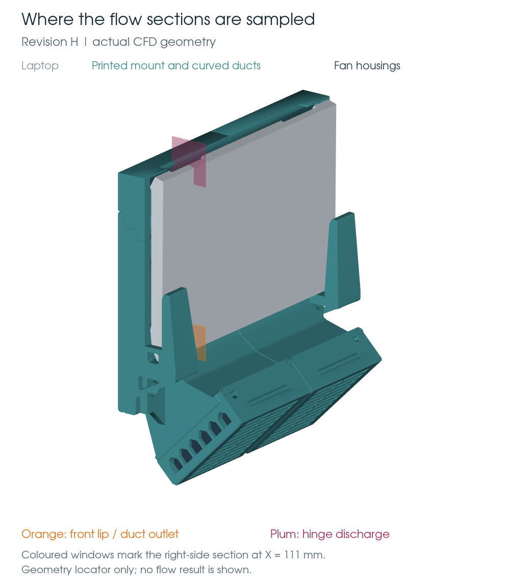

A closer look at the airflow.
A new transient CFD study puts finer cells around the duct edges and laptop lips. The mesh is built. Initial solver diagnostics show that further mesh and runtime work is required before quantitative results.
The standard mesh check passes, but three expanded checks fail. Sustained vortex shedding and settled lip suction have not been established.
Four-hour flow run: hourly video checkpoints
A monitored CPU continuation started at 12:12 p.m. Eastern on 8 September, with a four-hour compute limit, adaptive timesteps capped at 25 µs and complete flow sections every two steps. Follow the cumulative videos and dated progress. This run uses the focused 3.2-million-cell mesh described in the GPU benchmark. The original 18.2-million-cell study below remains a separate commissioning record.
Original fine-mesh commissioning record
Where the sections sit

The existing movie below contains only four startup snapshots. The new four-hour run and its hourly videos have a separate page, with actual physical times, source-frame counts and mesh limitations.
The original fine mesh around the lips

The geometry is the installed Revision H STEP export, including its curved duct transitions. This is separate from the earlier 836,278-cell Revision F study and the minimalist model. The laptop silhouette and internal passages remain approximations.
View the complete duct section

What passed, and what did not
| Geometry and surface | 14 installed solids checked against native CAD; a single closed, valid fluid solid and a non-self-intersecting tessellation. |
|---|---|
| Standard mesh check | Pass. One connected fluid region, positive volumes, maximum nonorthogonality 65° and skewness 2.94. |
| Expanded mesh check | Fail. 2,998 low-determinant cells, 78 low-weight faces and 396,528 concave cells. Defects include lip regions. |
| Transient run | The diagnostic restart completed four steps through 0.0203084 ms. The original 2 ms endpoint was not completed. |
| Shedding and suction | Not established. Startup patterns are insufficient evidence of periodic shedding or settled pressure depression. |
| Numerical independence | Not established. Same-geometry mesh and timestep comparisons remain necessary. |
Recorded startup observations
The diagnostic restart completed four steps through 0.0203084 ms in 13.1 minutes, with Courant number at or below 0.5 after loop startup. All 22 probes were valid. Twelve turbulence-bounding events and the mesh quality failures remain unresolved.
These are solver outputs during commissioning. The initial flow was interpolated from the earlier Revision F solution to shorten startup; it is not a settled Revision H flow field. No shedding frequency or Bernoulli conclusion is reported.


What this model can answer
The original pilot was curtailed after the first steps showed costly pressure correction and increasing turbulence clipping. A runtime dictionary-reload error prevented its requested checkpoint. A diagnostic restart uses fixed settings, every-step field output and a 0.02 ms endpoint. This is far too short to establish a flow pattern or frequency.
The transient SST URANS solve records pressure, velocity, vorticity and Q, with probes every step. The original section interval was 0.1 ms; the diagnostic restart records sections every step. A useful shedding result needs settled flow followed by many repeatable cycles, plus mesh and timestep checks. Negative static pressure by itself does not identify a Bernoulli mechanism; fan forcing, acceleration, losses and separated flow must be considered together.
All four fans use nominal 10 Pa constant-force actuators. Fan curves, grille and fin resistance, and internal laptop passages are uncalibrated. The traced laptop profile has approximately ±2 mm uncertainty and intake positions ±4 mm. Finer cells do not remove those geometry uncertainties. This study contains no temperature prediction or hardware validation.
GPU benchmark: keep the CPU for now
On 8 September, a separate 3.2-million-cell Revision H mesh ran ten identical 10-microsecond steps on CPU and with pressure solves offloaded to the RTX 3080 Ti. The tested GPU configuration took 23% longer. Both runs use the same quiescent initial fields, fan sources, physical model and four CPU workers.
| Measurement | CPU multigrid | GPU block Jacobi |
|---|---|---|
| Ten-step solver time | 178.31 s | 219.86 s |
| Total pressure iterations | 474 | 18,907 |
| Maximum field-error check | Reference | Fails U/p limit |
The GPU passes all five field checks on a small control case. On the duct mesh, all RMS differences pass, but maximum local differences in pressure and velocity do not. The experimental GPU multigrid option crashes. These results do not justify switching the longer run to this GPU backend.
One sequential trial per backend on a shared desktop. The focused mesh has four low-determinant cells and poor wall-layer coverage, so this is a bounded backend comparison, not a validation mesh or design prediction. Three new mesh candidates remain provisional. A user-authorized four-hour exploratory continuation is now using the CPU checkpoint from this focused mesh.
Technical references: OpenFOAM external solver interface · PETSc GPU support · NASA verification and validation guidance